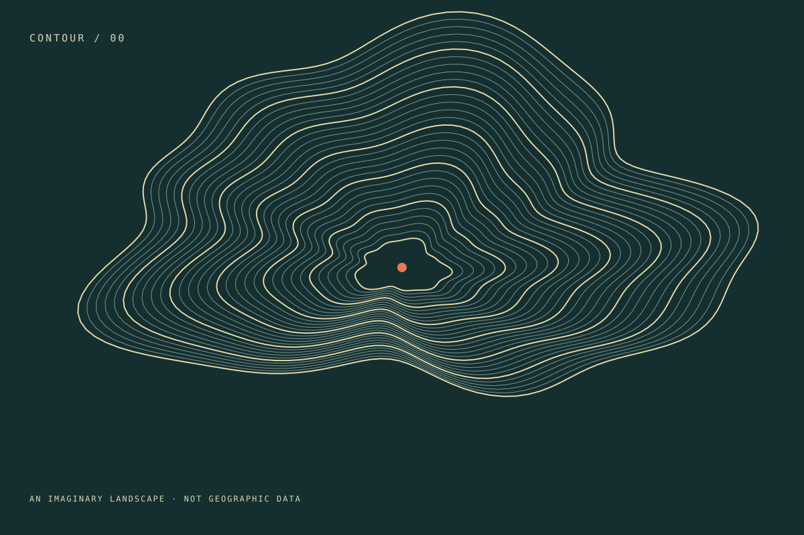

先做出来，再收录
每个案例都有实际输出或可运行实例。想法和未完成实验，不冒充成功作品。
● A SMALL COLLECTION, MADE FOR REAL.
从一个想法，到看得见的结果。
真实制作的 AI 图像、代码视觉与交互实验，
把作品、方法和可复现的细节，放在一起。
亲手制作 · 清楚分类 · 保留证据

THE COLLECTION
产物先看，方法再读。
分类说清楚，结果不夸大。
换个关键词试试。尚未完成的案例，不用占位作品充数。
NOT JUST A GALLERY
借鉴的是展示与记录的思路。
作品、提示词与代码，从自己的实践开始。
每个案例都有实际输出或可运行实例。想法和未完成实验，不冒充成功作品。
模型生图、程序图形、代码动效与交互应用独立分类。模型版本未披露时，直接说明。
保留提示词、源码与来源说明。已验证什么、尚未验证什么，随案例一起记录。
SOURCE OF TRUTH
源文件、案例清单与说明采用同一份数据维护，
让每次新增作品，都有可追溯的制作记录。
复用许可尚未选定。请先查看每条案例的素材与权利说明。